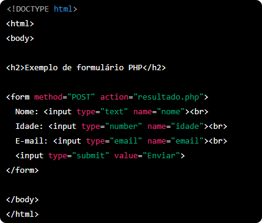
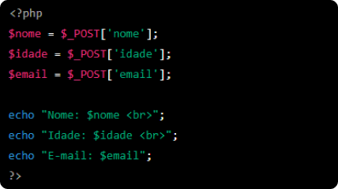

PHP
Definição
PHP (acrônimo recursivo para PHP: Hypertext Preprocessor) é uma linguagem de programação de código aberto e muito popular, especialmente usada para criar aplicativos web dinâmicos e interativos. Foi originalmente criada em 1994 por Rasmus Lerdorf e, desde então, tem sido atualizada e aprimorada por uma comunidade de desenvolvedores em todo o mundo.
O PHP é uma linguagem de servidor que é executada em um servidor web para gerar conteúdo dinâmico em uma página da web. Em outras palavras, o PHP permite que você crie páginas da web que mudam e se adaptam de acordo com as necessidades dos usuários. Com o PHP, você pode criar formulários de login, fóruns de discussão, carrinhos de compras e muito mais.
Como Utilizar?
O PHP é fácil de usar e possui uma sintaxe semelhante ao C e ao Perl, o que a torna uma escolha popular para muitos desenvolvedores. Além disso, o PHP é compatível com muitos bancos de dados, incluindo MySQL, Oracle e PostgreSQL, o que o torna uma opção popular para criar aplicativos web que precisam armazenar e recuperar informações do banco de dados.
Uma das principais vantagens do PHP é que ele é altamente personalizável e escalável. Os desenvolvedores podem criar suas próprias funções e bibliotecas personalizadas para ajudá-los a trabalhar de forma mais eficiente. Além disso, o PHP pode ser usado com outras tecnologias, como HTML, CSS, JavaScript e AJAX, para criar aplicativos web ricos em recursos.
Para usar o PHP em um servidor, é necessário instalar um servidor web que suporte PHP, como Apache, Nginx ou IIS. Além disso, é necessário ter um ambiente de desenvolvimento integrado (IDE) ou um editor de texto para escrever o código PHP. Muitos IDEs populares incluem recursos para depuração de código e verificação de sintaxe, o que pode ajudar os desenvolvedores a criar aplicativos PHP mais eficientes e sem erros.
Resumo
Em resumo, o PHP é uma linguagem de programação popular e poderosa que permite criar aplicativos web dinâmicos e interativos. É fácil de usar, altamente personalizável e escalável, e pode ser usado com outras tecnologias para criar aplicativos web ricos em recursos. Se você estiver interessado em aprender a programar em PHP, existem muitos recursos disponíveis online, incluindo tutoriais, cursos e documentação oficial.
Codigo em HTML, existindo 3 input que serão escritos com os dados pedidos
Codigo em PHP, que vai pegar os dados escritos nos inputs do HTML e vai exibi-los na tela
Cursos

CodeAcademy

W3Schools

CursoEmVideo